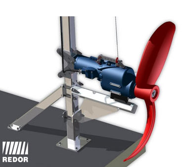

The submersible mixers are used first of all as Sewage treatment plant components. They prevent deposits from settling in balance tanks. They are also used in biochemical processes at Waste Water Treatment plants (denitrification and dephosphatation) etc. In addition, they can be used in the Agriculture industry and Sewage systems.
Their task is to put liquid in motion, homogenize its composition, prevent sedimentation, put liquids in motion in required flow direction and overcome the resistance of flow in open chambers, ditches, channels. They are used in order to intensify physical and chemical processes taking place in liquid and in particular, for solid and gas dissolution. This process is widely used at Sewage Water Aeration where the intensive mixing shall extend the gas movement length and prevent the small bubbles from binding and converting into big ones. Sometimes, the mixer, in particular the high-speed types, are used as protection against surface scum.
The submersible mixers can be operated in fluids at max. temperature of 40ºC and submersion depth to 10 m. At the selection of the submersible mixer and in particular, its location, please note that the balance in the tank at continuous operation occurs when the pressure force of the mixer equals the external forces impacting on the propeller stream.

So, these external forces must be calculated. Also the tank inflow (e.g. from recirculation) must be taken into account. Not only the volume flow values but also their directions are important.
The mixers shall put in motion the surrounding fluid with a specified speed in order to ensure the proper run of the process. From the mixing technology point of view, the volume pumped through mixer’s external diameter is not important. Important is the volume put in motion with the specified speed. According to theoretical studies, the axial component of the momentum transferred to the fluid by the mixer is important. It equals the axial impeller load force. Therefore, the axial force is the most important parameter of mixers and it is specified in catalogues. The axial force can be easily converted into effective fluid volume stream (i.e. output) put into motion with the specified speed v. When sewage is mixed, the required fluid speed shall be at least v = 0,3 m/s. So, the "effective output” for v = 0,3 m/s is specified. It is the volume stream which can be put in motion by the mixer with the minimum speed v = 0,3 m/s.
Axial force – F [kN];
Effective output v = 0,3 m/s – Q0,3 [m3/s];
Motor input power (power input) – P1 [kW];
Motor output power (at motor shaft) – P2 [kW].
Due to the permanent development, Redor Sp. z o.o. reserves itself the right to make changes without notification. The dimensions and parameters of our equipment specified on out website are provided only as information. The selection of our products shall be consulted with our sales department.